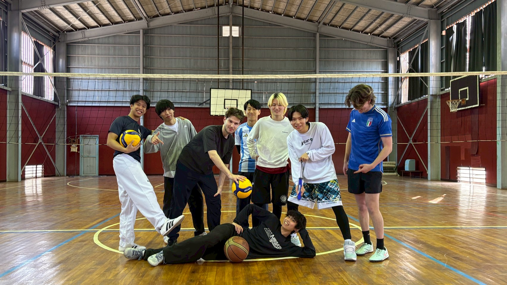
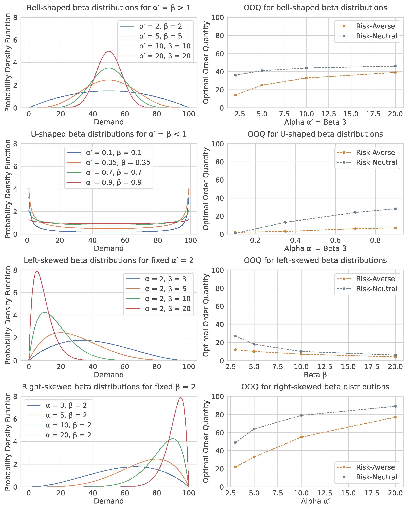
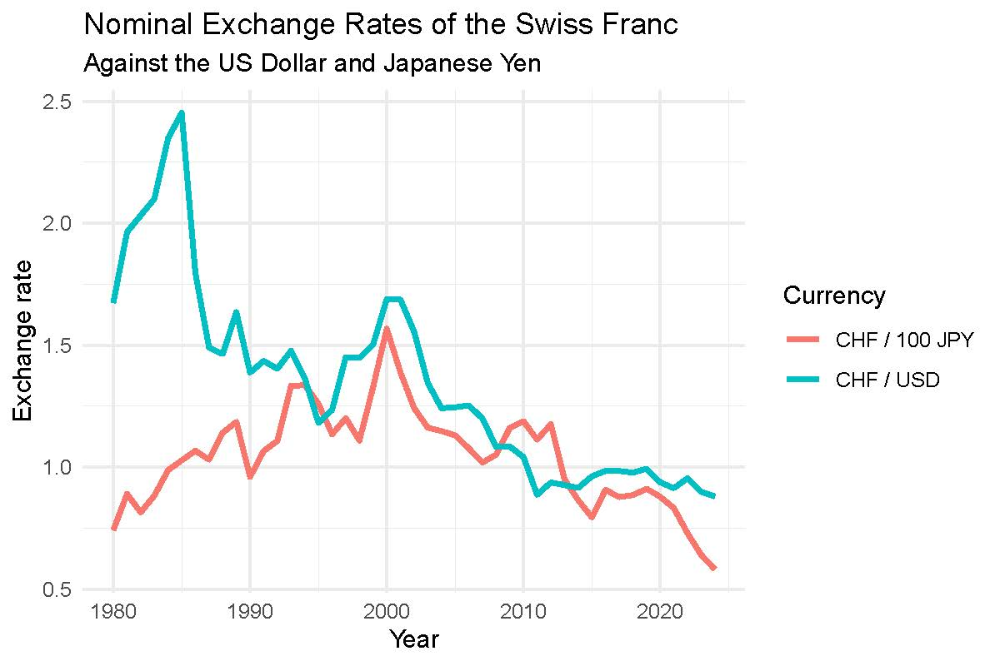

Hello, I'm
Thanh Truc PHAN
M.Sc. Student in Economics
Data & Business Analysis · Macro, Micro & International / Asian Economics
M.Sc. Economics student at the University of Bern with a focus on macroeconomics, microeconomics, econometrics, and applied economic analysis. My studies combine quantitative methods with fields such as industrial organization, labour economics, energy economics, climate economics, and banking. I am interested in how economies, firms, and institutions develop, adapt, and compete. I have a particular interest in Asian economic transformation, development strategy, energy and climate economics, and data-driven business analysis.
About Me
Energetic and curious, I'm happiest when I'm on the move — whether on a Taekwondo mat, a mountain trail, or exploring a new city. I love spending time with friends and family, staying active, and capturing the world around me through my camera.
Life Outside Studies
Taekwondo
Competing in national tournaments. Martial arts shaped my discipline, focus, and drive to keep pushing.

Running
Finishing the Grand Prix de Bern with friends is one of my favourite moments of the year.

Volleyball
Playing with friends in Tokyo and back home. Volleyball is where sport and social life meet.
Snowboarding
Hitting the slopes every winter with friends. Nothing beats a clear day up in the Alps.

Friends & Family
The people around me are my energy source. Whether it's a night out, a trip, or just dinner together.
Travelling
New places, new perspectives. From the Swiss Alps to Southeast Asia, always looking for the next destination.
Photography & Videography
A selection of shots from Japan and Switzerland.


Education
Master of Science in Economics
University of Bern, Switzerland
- Courses: Microeconomics, Industrial Organization, Health Economics, Energy Economics, Labour & Behavioural Economics
- Master Thesis: Tourism Economics (working title, in progress)
Exchange Semester
Waseda University, Tokyo, Japan
- Courses: Asian Economy, Development Economics, Japanese Economy
- Immersive exposure to Japanese and Asian economic systems
- Excellent academic performance (A/A+ grades)
Bachelor of Science in Economics
University of Bern, Switzerland
- Minors: Mathematics, Digitalization, and Applied Data Science
- Thesis: Numerical analysis of the newsvendor problem under risk
Bachelor of Science in Mathematics
University of Bern, Switzerland
- Coursework in Analysis and Linear Algebra
- Strong quantitative foundation; later transferred to Economics
Work Experience
Junior Assistant (HR, Finance & Administration)
University of Bern — Institute for Information Systems (IWI) · 40–50%
- Point of contact for students, project partners, and staff
- Coordination of communication and organisational processes
- Recruitment support: job postings, application management, onboarding, and administration
- Financial support: invoice processing, expense reports, and budget tracking
- Assistance in quality management and digitalisation of internal processes
- Creation and updating of process documentation
Sport Leader
Decathlon — Bern Westside · 30%
- Active customer consulting and support in the sale of sporting goods
- Ensuring a high level of customer service and satisfaction
- Organisation of team events to promote collaboration and cohesion
Skills
Languages
Technical Tools
Professional Skills
Projects & Highlights

Behavioral Factors in the Newsvendor Problem: A Numerical Analysis
Examined how risk aversion, loss aversion, and environmental consciousness influence optimal ordering decisions in the newsvendor model. Introduced beta distribution demand scenarios and derived comparative statics numerically using Python.
Read Paper
Energy Demand Analysis, Transport Choice & PV Investment
Empirical assignment covering four tasks: panel data analysis of energy consumption across countries (1965–2023) split by income group; short- and long-run price elasticity estimation using dynamic OLS; multinomial logit transport mode choice model (Swissmetro stated preference survey); and household PV investment appraisal with NPV analysis and Monte Carlo simulation of electricity price uncertainty.
Read Paper
Macroeconomic Developments in Japan and Switzerland: A Comparative Analysis
Empirical report comparing real GDP growth, CPI inflation, and nominal exchange rates of Japan and Switzerland (1980–2024). Produced descriptive statistics, time-series plots, and a correlation matrix using R and OECD / SNB / World Bank data.
Read PaperMore Academic Work
Two-part study tracing Vietnam's Đổi Mới transformation since the 1990s, benchmarking against regional peers, and evaluating the feasibility of reaching high-income status by 2045 using the middle-income trap framework.
Analysis of free-rider problems and coalition formation, with a mathematical derivation of Nash Equilibrium and Global Social Optimum in a biquadratic damage model with deposit-refund transfer schemes.
Solved and simulated the Green Solow Model: derived balanced growth paths, solved a first-order ODE for the capital time path, and calculated the minimum abatement share required to stay within a given carbon budget.
Replicated key figures from Autor, Katz & Kearney (2008) and Autor & Dorn (2013) on wage inequality and labor market polarization, reconstructed from CPS microdata in R.
Compared Forbes (2000), Barro (2000), and Ostry et al. (2014) on the inequality–growth nexus, examining divergent findings and methodological challenges in cross-country panel estimation.
Applied an EEIO framework using WIOD 2013 to quantify embodied CO₂ emissions from chocolate consumption, identifying electricity, food processing, and agriculture as dominant sectors.
Additional Documents
For privacy reasons, diplomas, certificates, transcripts, grades, references, and full academic papers are not published directly on this website. They are available upon request during the application process.
Diplomas
Available upon request
Certificates
Available upon request
Transcripts & Grades
Available upon request
References
Available upon request
Academic Papers
Available upon request
Let's Connect
I am currently open to internships, trainee programmes, and entry-level opportunities in economics, data analysis, business, and related fields. Feel free to reach out.